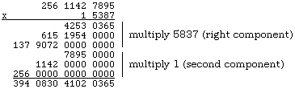

It was noted in the last section that one could multiply two numbers in the range 0 .. 9999 and retain all the digits in two separate cardinals. Specifically, one can modify the procedure presented there to return the entire product, rather than just some of the digits:
PROCEDURE Multiply8 (mplier, mcand : CARDINAL; VAR ansHi, ansLo : CARDINAL); TYPE parts = ARRAY [0 .. 1] OF CARDINAL; VAR x, y : parts; t1, t2, t3 : CARDINAL; BEGIN x[1] := mplier DIV 100; (* break numbers into two parts *) x[0] := mplier MOD 100; y[1] := mcand DIV 100; y[0] := mcand MOD 100; (* work out all three terms in the multiplication *) t1 := x[1] * y[1]; t2 := x[1] * y[0] + x[0] * y[1]; t3 := x[0] * y[0]; (* redistribute the contents of t2 to t1 and t3 *); t1 := t1 + t2 DIV 100; t3 := t3 + 100 * (t2 MOD 100); (* and from this obtain the least significant digits of the answer. *) ansLo := t3 MOD 10000; (* and transfer any part of t3 over 10000 to the high digits *) ansHi := t3 DIV 10000 + t1; END Multiply8;
One could write out such eight digit numbers with:
PROCEDURE Write8 (hi, lo : CARDINAL);
VAR
temp : CARDINAL;
BEGIN
IF hi # 0 (* else write only the digits of lo part *)
THEN
WriteCard (hi, 1); (* first group of digits *)
IF lo # 0
THEN
temp := lo;
ELSE
(* if=0 and this not done next part prints zeros forever *)
temp := 1;
END;
(* now pad with zeros if needed *)
WHILE temp < 1000 (* four digits needed in second part *)
DO
WriteChar ("0");
temp := temp * 10;
END;
END; (* if hi # 0 *)
WriteCard (lo, 1); (* always *)
END Write8;
All of this is possible with far less work if the type CARDINAL has a suitable range. Expand the horizon, however. Suppose the desire were to be able to keep track of (up to) sixteen digit numbers, and be able to add or multiply two of these and still retain up to sixteen digits in the answer. If the range of the built in cardinal is already 8 digits, either use just two to get sixteen digits or use four to obtain thirty-two.
There are several ways that this could be achieved, and some will be examined later in the text. Here, it will be accomplished by using four cardinals, each retaining four digits. Typically, the type is specified in a library module, as abstractly as possible for the tools available thus far.
DEFINITION MODULE BigCards; (* By R. Sutcliffe Modified 1993 05 10 *) TYPE BigCard = ARRAY [0 .. 3] OF CARDINAL; (* least significant digits in lowest numbered component *) VAR bigOK : BOOLEAN; (* will be true if last operation ok, false if overflow took place *) PROCEDURE Add (first, second : BigCard; VAR result : BigCard); (* Pre: None Post: the result is the sum of the two numbers. If there is an overflow, the left digit is lost and bigOK is false. *) PROCEDURE Mul (mplier, mcand : BigCard; VAR result : BigCard); (* Pre: None Post: the result is the product of the two numbers. If there is an overflow, the left digit(s) is/are lost and bigOK is false. *) PROCEDURE WriteBigCard (theNum : BigCard); (* Pre: None Post: theNum is written to the standard output. *) END BigCards.
The lowest indexed cardinal in variables of type BigCard holds the least significant digits. If one has two of numbers of type BigCard, one can begin at the rightmost side of the multiplier and multiply each component of the multiplier, carrying as needed. This mimics the algorithm for multiplying two cardinals in decimal notation:
2567 * 678 ----- 20536 179690 1540200 ------- 1740426
except that each "column" contains a number in the range 0 .. 9999 rather than a digit in the range 0 .. 9.

Another way to think about this algorithm is that one must shift the first number (the multiplicand) to the left by a number of columns equal to the position from the right of the component of the second number (the multiplier) currently being used. For instance, to multiply by the second multiplier component from the right, shift the multiplicand left by one component first, effectively splitting the multiplication up as:
(10000 (a[1]) + a[0]) * b
(10000 (a[1] * b) + (a[0] * b)
If one overflows the data type on the left, the result is invalid and this fact must be flagged. With all these ideas in mind, here are some procedures that could implement this module. Note that bigOK is a boolean that is global to all the procedures here but that must be checked by any client programs after calling these procedures if they are to rely on the results. Its role is essentially the same as Done in InOut.
IMPLEMENTATION MODULE BigCards;
(* By R. Sutcliffe
Modified 1993 05 10 *)
FROM STextIO IMPORT
WriteChar;
FROM SWholeIO IMPORT
WriteCard;
(* local procedures *)
PROCEDURE Carry (VAR big : BigCard);
(* Pre: none
Post: Any excesses over 10000 in any component of the number are carried to the next component on the left *)
VAR
count, temp : CARDINAL;
BEGIN
FOR count := 3 TO 1 BY -1
DO
temp := big [count];
big [count] := temp MOD 10000; (* leave part < 10000 *)
big [count - 1] := big [count - 1] + (temp DIV 10000);
(* carry excess *)
END; (* for *)
IF big [0] > 10000
THEN
bigOK := FALSE
END (* if *)
END Carry;
PROCEDURE Init (VAR theNum : BigCard);
(* Pre: none
Post: theNum has all components set to zero *)
VAR
count : CARDINAL;
BEGIN
FOR count := 0 TO 3 (* initialize result *)
DO
theNum [count] := 0
END; (* for count *)
END Init;
(* Put the procedure Multiply8 here *)
(* Now the exported ones. *)
PROCEDURE Add (first, second : BigCard; VAR result : BigCard);
VAR
count: CARDINAL;
BEGIN
bigOK := TRUE;
FOR count := 0 TO 3
DO
result [count] := first [count] + second [count];
END;
Carry (result); (* resets bigOK if error *)
END Add;
PROCEDURE Mul (mplier, mcand : BigCard; VAR result : BigCard);
PROCEDURE Shift (VAR big : BigCard; shift : CARDINAL);
(* This procedure shifts a BigCard by shift components to the left where shift is the component number of the multiplicand component currently being used. *)
VAR
count : CARDINAL;
BEGIN
count := 4;
WHILE count > 0
DO
DEC (count); (* start at component 3 *)
IF count + shift <= 3 (* shift only if place to go *)
THEN
big [count + shift] := big [count];
ELSIF big [count] # 0 THEN
bigOK := FALSE; (* if were supposed to shift, is bad *)
END; (* if *)
END; (* while *)
WHILE count < shift (* now pad the back end with zeros *)
DO
big [count] := 0;
INC (count);
END; (* while *)
END Shift;
(* main procedure variables declared here *)
VAR
mulAnsHi, mulAnsLo,
count, comCount : CARDINAL;
temp, prod : BigCard;
BEGIN (* main procedure *)
Init (result);
bigOK := TRUE;
(* may be reset to false by either shift or carry *)
FOR comCount := 0 TO 3 (* count on multiplier *)
DO
temp := mcand; (* move multiplicand to a temporary *)
Shift (temp, comCount); (* shift multiplicand if needed *)
FOR count := comCount TO 3 (* count in multiplier *)
DO
Multiply8 (temp [count], mplier [comCount],
mulAnsHi, mulAnsLo);
(* do one component *)
result [count] := result [count] + mulAnsLo;
(* low part into result *)
IF count < 3 (* now put high part in *)
THEN
result [count + 1] := result [count + 1] + mulAnsHi
ELSIF mulAnsHi # 0 THEN
(* if count = 3 and mulAnsHi > 0 then overflow *)
bigOK := FALSE (* too big *)
END; (* if count *)
Carry (result) (* cover any carries *)
END (* for count *)
END (* for comCount *)
END Mul;
PROCEDURE WriteBigCard (theNum : BigCard);
VAR
temp, count : CARDINAL;
BEGIN
count := 3;
WHILE count > 0
DO
IF theNum [count] # 0 (* else do only digits of next part *)
THEN
WriteCard (theNum [count], 0);(* this group of digits *)
IF theNum [count - 1] # 0
THEN
temp := theNum [count - 1];
ELSE
(* if=0 and this not done next part prints zeros forever *)
temp := 1;
END;
(* now pad with zeros if needed *)
WHILE temp < 1000 (* four digits needed in next part *)
DO
WriteChar ("0");
temp := temp * 10;
END;
END; (* theNum [count] # 0 *)
DEC (count);
END; (* while *)
WriteCard (theNum [0], 0); (* always *)
END WriteBigCard;
END BigCards.
By means of such methods, one could implement a full range of operations on the type BigCard, and keep track of any overflows that might take place. The student is asked to extend this module slightly in the exercises, but a fuller treatment of such a data type will be postponed until Chapter 16 when a slightly different and more abstract implementation will be considered.